Mission Kidsono · Onboarding · Profil enfant · Audit + benchmark
Les écrans de profil enfant : prénom, âge, avatar, préférences
Kidsono a figé trois écrans de personnalisation après la création de compte, avant le paywall : Écran A (prénom + tranche d'âge), Écran B (avatar, le moment ludique), Écran C (préférences de catégories, 16 cases multi-select). Ce rapport ne rediscute pas ces choix : il les éclaire par ce que font les concurrents, écrans lus un par un. On répond à 7 questions : qui demande quoi et qui remplit (parent ou enfant) ; condenser ou découper une décision par écran ; libellés d'âge (chiffres vs niveaux scolaires) ; type d'avatar (galerie de mascottes vs builder vs initiale) ; registre de voix ; multi-profil dès l'onboarding ou différé ; place et rythme dans le flow.
Panel · 18 apps lues sur captures (FR audio/histoires + lecture/apprentissage + l'existant Kidsono)
Confiance · Solide vu sur captures · Observé pattern panel · Estim. directionnel
Refs clés · Aumio, Pickatale, Reading.com (séquence profil) · Reading Eggs, Skybrary (multi-profil)
La réponse aux 7 questions
Synthèse d'abord : un verdict par question, avec niveau de confiance. Les écrans qui les fondent suivent, lus un par un, puis les implications par écran Kidsono.
1 · Qui demande quoi, et qui remplit (parent ou enfant) ?
Le parent renseigne prénom + âge. L'enfant choisit l'avatar et les goûts. Voix parent sur les champs sérieux, voix enfant invitée sur le ludique.
Observé Le pattern dominant du panel : prénom et âge sont des champs de paramétrage adressés au parent (Aumio « Quel est le nom de votre enfant », Reading.com « What is your child's name », Reading Eggs « Add your child », Homer « Let's start your child's learning profile »). L'enfant, lui, est explicitement invité à intervenir sur le ludique : Pickatale « Have your child pick a fun avatar », Skybrary « letting them help set up their profile, they can make Skybrary their own », Hooked on Phonics « Welcome Thelma, let's create your own special avatar ». Le moment avatar est le passage de relais parent vers enfant.
Observé Le genre n'est quasiment jamais demandé explicitement sur le panel ; il est laissé implicite via le choix d'avatar (galeries mixtes animaux/personnages). Les préférences de catégories, quand elles existent, sont un écran à part, souvent côté goûts enfant.
2 · Condenser plusieurs décisions sur un écran, ou une décision par écran ?
Les deux écoles existent. Une décision par écran (Aumio, Reading.com) rend chaque pas trivial ; le condensé (Alma, Pickatale) va plus vite mais charge l'écran.
- Une décision par écran : Aumio (nom seul, puis âge seul, avec points de progression), Reading.com (âge, puis avatar, puis nom, barre de progression). Chaque écran respire, la charge cognitive est minimale, c'est lisible pour un public peu expert.
- Condensé : Alma Studio (avatar + prénom + âge + langue sur un écran scrollable), Pickatale (prénom + année + réglage IA), Reading Eggs (prénom + année). Plus rapide, moins de taps, mais l'écran est dense.
- Solide L'existant Kidsono est condensé à l'extrême : prénom + tranche d'âge + galerie d'avatars sur un seul écran scrollable. C'est faisable, mais ça écrase le moment avatar (le ludique) sous deux champs de formulaire.
3 · Libellés de la tranche d'âge : chiffres, niveaux scolaires, ou date de naissance ?
Trois familles. Âge chiffré (le plus courant et le plus clair), date de naissance précise (apps qui veulent calculer), niveau scolaire (rare et ambigu).
- Âge chiffré : ABCmouse (2 à 9+ en pastilles), Reading.com (Under 3, 3, 3½, 4½… jusqu'à 8+, très granulaire), Lingokids (1 à 9, chiffres écrits en toutes lettres), Okoo (slider sur un âge unique). Net, universel, pas d'interprétation.
- Date de naissance / année : Aumio et Alma (roue mois + année, l'app affiche l'âge calculé), Pickatale et Reading Eggs (année de naissance), Epic (« enter your birth year » en numpad, pour la barrière COPPA). Plus précis pour adapter le contenu, mais un cran plus lourd à saisir.
- Tranche par bandes : Bayam (3-5 / 6-8 ans, mais c'est un choix de catalogue, pas l'âge de l'enfant). Le niveau scolaire pur (« maternelle / grands / collège ») n'apparaît que chez Kidsono dans le panel : Estim. formulation ambiguë (un CP a 6 ans mais n'est pas « chez les grands » partout), et qui vieillit mal pour le multi-âge.
4 · Type d'avatar : galerie de mascottes, builder riche, ou initiale ?
La galerie de mascottes prête à choisir est le standard. Le builder couche-par-couche est un pic d'engagement (mais lourd). L'initiale est un repli pauvre.
- Galerie de mascottes / personnages (standard) : Pickatale (12 animaux ronds), Reading.com (12 visages d'enfants illustrés), Bayam (carrousel de héros), Skybrary (montgolfière). Choix immédiat, un tap, ludique sans friction. C'est la voie majoritaire.
- Builder riche couche par couche : Hooked on Phonics (corps, vêtements, accessoires, aperçu live, certains items verrouillés premium). Très engageant, c'est un vrai moment de jeu, mais lourd à produire et long pour l'enfant. Moshi mêle galerie + personnalité nommée (« Snoozy Koala, loves lilac rain »).
- Solide L'existant Kidsono propose une galerie de la mascotte ourson en variantes (poses), plus une initiale colorée par défaut (le « T » de Thelma sur pastille). L'initiale seule est le degré zéro : à garder comme repli, pas comme proposition principale.
5 · Registre / voix : enfant (tutoiement) ou parent (vouvoiement) ?
Le panel parle massivement au PARENT sur prénom/âge. Le tutoiement enfant est minoritaire et porté surtout par des perdants. À surveiller pour Kidsono qui a tranché « voix enfant ».
Observé Sur les apps solides, les écrans de profil sont en voix parent : « Quel est le nom de votre enfant » (Aumio), « What is your child's name » (Reading.com), « Add your child » (Reading Eggs), « Let's start your child's learning profile » (Homer). Logique : c'est le parent qui tient le téléphone à la création de compte.
Solide Le tutoiement enfant sur ces écrans est rare, et dans le panel il est surtout porté par des contre-exemples (Capitaine Aventure : « Quel est ton prénom, jeune aventurier ? »). Kidsono actuel est déjà en voix enfant (« Qui es-tu ? », « Choisis ton personnage ! »). Estim. La décision Kidsono « voix enfant » est donc contrarian sur les champs prénom/âge : tenable si le parent et l'enfant sont côte à côte, mais le champ âge en tutoiement (« Tu es en maternelle… ») reste bancal car c'est le parent qui sait répondre. Le tutoiement est plus naturel sur l'avatar et les goûts.
6 · Multi-profil : géré dès l'onboarding ou différé ?
Un seul profil suffit pour démarrer ; le multi-profil est presque toujours signalé mais reporté (« plus tard »). Un écran « Qui regarde ? » arrive à l'ouverture des sessions suivantes.
Observé Le pattern net : on crée un profil, on rassure que d'autres viendront plus tard. Aumio « ajouter des profils supplémentaires plus tard », Reading.com « You can add more child profiles later », Alma « vous pouvez créer d'autres profils plus tard », Moshi « create additional child profiles later », Pickatale « up to 4 profiles » mais 1 suffit, Skybrary « Just 1 is needed to get started ». L'écran récap final propose un « + Créer un profil » optionnel (Pickatale, Reading Eggs).
Observé Le sélecteur multi-profil de type « Who is watching ? » (Vooks, Reading Eggs « Who's learning? », Skybrary) est un écran de retour, à l'ouverture des sessions, pas un passage obligé de l'onboarding initial. Cohérent avec la décision Kidsono (multi-profil optionnel).
7 · Place dans le flow + rythme : ludique ou neutre dans la courbe ?
Le profil arrive après le compte, avant le paywall. Prénom/âge = creux fonctionnel neutre. Avatar = le seul vrai pic ludique. Le « profil créé » festif relance avant le paywall.
Observé Dans la courbe de densité de l'onboarding, la zone profil est globalement un creux fonctionnel : fonds sobres, formulaires (Reading.com sur blanc étoilé léger, Reading Eggs sur blanc, Aumio sur navy uni). L'avatar est l'exception qui remonte l'intensité : galerie colorée, aperçu animé, c'est le moment où l'enfant joue. Puis un écran de célébration referme la séquence avant l'étape commerciale : Reading.com « Woohoo! Thelma's profile is all set up » avec confettis sur fond navy, Pickatale « And, you're done! ».
Estim. Pour Kidsono, ça valide l'ordre A (prénom+âge, neutre) puis B (avatar, le pic ludique) puis C (préférences). L'écran de fin festif est une rampe de lancement vers le paywall : on referme sur une émotion positive juste avant de demander de payer.
Les écrans, lus un par un
Captures réelles, groupées par axe. Chaque carte : ce que je repère, et le niveau de confiance. Les apps de la famille des perdants ne servent que de repoussoir, signalées comme tel.
Découpage & qui remplit · une décision par écran
Le profil découpé : un pas, une décision (voix parent)
Chaque champ a son écran, avec progression visible. Lisible, peu de charge cognitive. Prénom et âge adressés au parent.
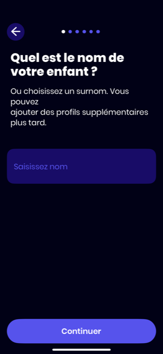
Aumio · prénom ★★★★★
03-perso-nom-enfant
Solide Écran dédié au prénom seul. « Quel est le nom de votre enfant ? » (voix parent), sous-titre « Ou choisissez un surnom » + rassurance multi-profil. Points de progression en haut. Beaucoup de vide : un pas trivial.
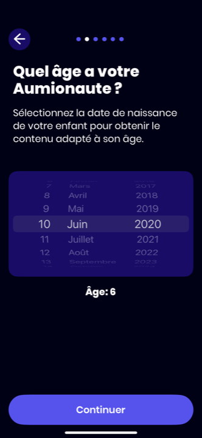
Aumio · âge ★★★★★
04-perso-age-enfant
Solide Écran séparé pour l'âge. Roue date de naissance ; l'app affiche « Âge : 6 » calculé sous la roue. Justification explicite « pour obtenir le contenu adapté à son âge ». Le découpage rend chaque champ digeste.
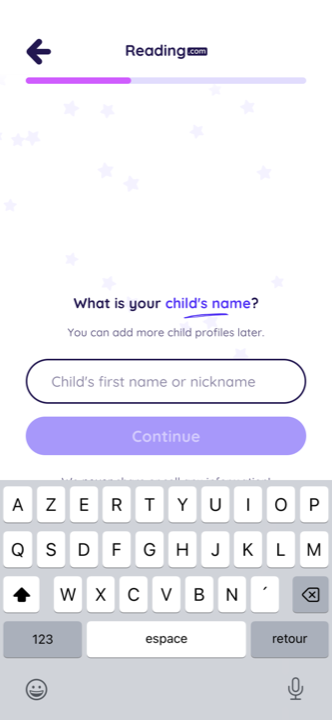
Reading.com · prénom ★★★★☆
13-input-child-name
Solide « What is your child's name ? » + « Child's first name or nickname » + rassurance « add more child profiles later ». Voix parent, barre de progression, fond blanc étoilé léger. Le surnom autorisé protège la vie privée.
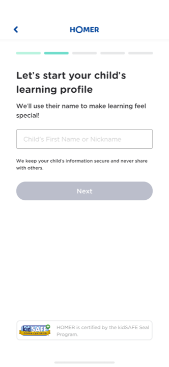
Homer · prénom ★★★★☆
03-perso-prenom-enfant-kidsafe
Solide « Let's start your child's learning profile / We'll use their name to make learning feel special! ». Prénom OU surnom. Sceau kidSAFE COPPA en pied + « we never share » : réassurance données au moment sensible.
Découpage · écran condensé
Le profil condensé : plusieurs champs d'un coup
Tout sur un écran scrollable. Plus rapide, mais l'écran est dense et le ludique se dilue dans le formulaire.
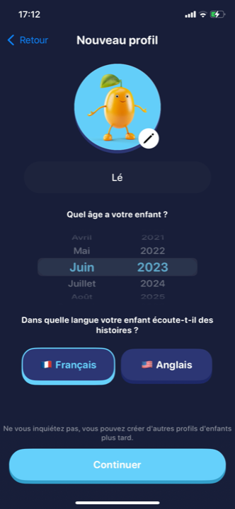
Alma Studio · profil ★★★★☆
04-profil-age-langue-continuer
Solide Un écran : avatar mascotte (mangue, crayon d'édition) + prénom + roue date de naissance + langue + Continuer. Voix parent, rassurance multi-profil en pied. Dense mais cohérent : concurrent FR audio direct.
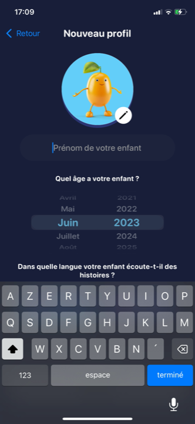
Alma Studio · saisie ★★★★☆
02-profil-enfant-prenom-clavier
Solide Même écran, clavier ouvert : « Prénom de votre enfant ». L'avatar mascotte 3D trône en haut, éditable. Montre le risque du condensé : avec le clavier, l'âge et la langue passent sous la ligne de flottaison.
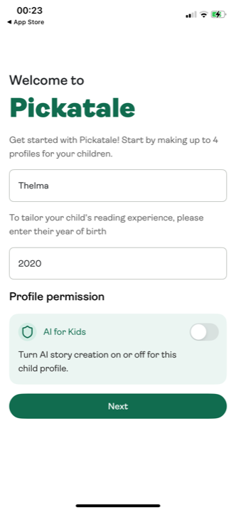
Pickatale · profil ★★★★☆
13-bonus-profil-enfant-prenom-annee
Solide « Welcome to Pickatale / make up to 4 profiles » : prénom + année de naissance + toggle « AI for Kids » (création d'histoires IA on/off). Condensé, mais l'avatar est sorti sur un écran suivant dédié.
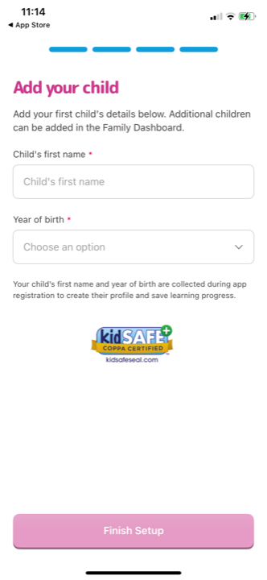
Reading Eggs · profil ★★★★☆
20-add-child-perso
Solide « Add your child » : prénom + année de naissance (champs obligatoires *). Sceau kidSAFE COPPA + justification « collected to create their profile and save learning progress ». Voix parent, sobre.
Libellés d'âge · les trois familles
Comment l'âge est demandé
Âge chiffré (le plus clair), date de naissance (plus précis), bande / niveau scolaire (ambigu). Du plus net au plus discutable.
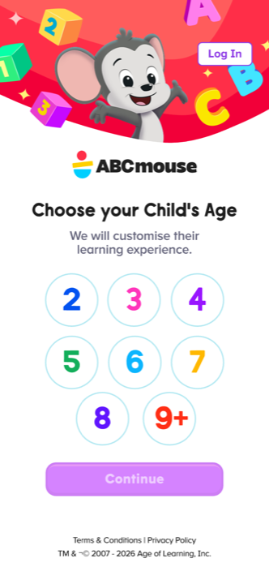
ABCmouse · âge chiffré ★★★★☆
04-choose-child-age
Solide « Choose your Child's Age / We will customise their learning experience. » Pastilles colorées 2 à 9+. Un tap, zéro ambiguïté, la couleur fait le ludique sans surcharge.
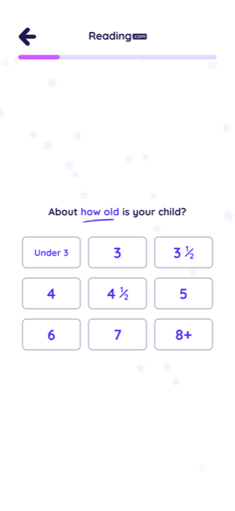
Reading.com · âge granulaire ★★★★☆
09-quiz-how-old-is-child
Solide « About how old is your child ? » : Under 3, 3, 3½, 4, 4½, 5, 6, 7, 8+. Demi-années sur les petits (où une demi-année change tout en lecture). Grille de cartes, voix parent.
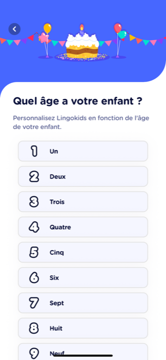
Lingokids · âge en lettres ★★★★☆
07-perso-age-enfant
Observé « Quel âge a votre enfant ? » : liste Un, Deux, Trois… (chiffres écrits en toutes lettres, avec un chiffre stylisé). Original, lisible, mais une liste à scroller (moins immédiat qu'une grille).
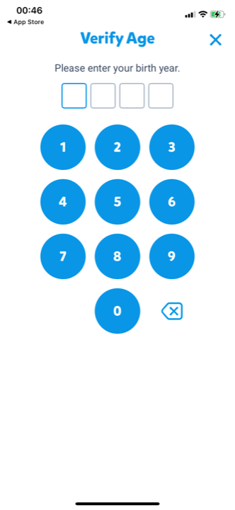
Epic · année (COPPA) ★★★★☆
11-verify-age-birth-year
Solide « Verify Age / enter your birth year » sur numpad. Ce n'est pas le profil enfant mais la barrière d'âge réglementaire côté parent. À ne pas confondre avec le choix d'âge du contenu.
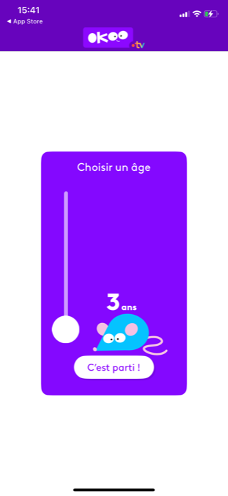
Okoo · slider d'âge ★★★☆☆
01-choisir-un-age
Observé « Choisir un âge » : slider vertical avec un seul âge affiché (« 3 ans ») et la mascotte souris. Ludique mais imprécis (un slider est plus dur à régler finement qu'un tap sur une valeur).
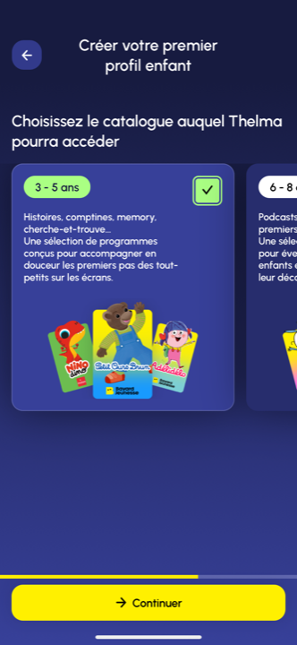
Bayam · bande de catalogue ★★★★☆
05-choix-catalogue-age
Solide « Choisissez le catalogue auquel Thelma pourra accéder » : cartes 3-5 ans / 6-8 ans avec descriptif de contenu. Ce n'est pas l'âge de l'enfant mais un filtre de catalogue, présenté comme tel.
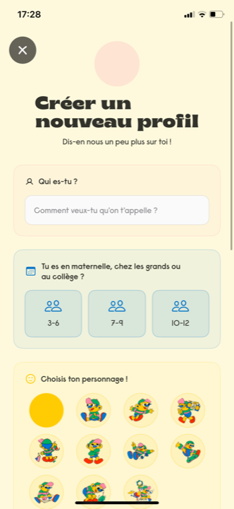
Kidsono (actuel) · niveau scolaire ★★☆☆☆
08-creer-profil-vide
À surveiller. « Tu es en maternelle, chez les grands ou au collège ? » : 3 bandes 3-6 / 7-9 / 10-12. Le wording niveau scolaire est ambigu (« chez les grands » n'est pas standard) ; les chiffres en pied sauvent la lisibilité. Préférer l'âge chiffré seul.
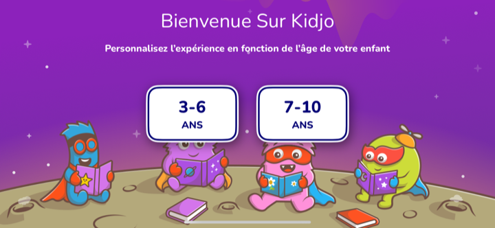
Kidjo (perdant F1b) · repoussoir ★★☆☆☆
02-perso-age-3-6-7-10
Contre-exemple. Bandes larges « 3-6 ANS / 7-10 ANS ». Famille des perdants, cité uniquement comme repoussoir : des bandes aussi larges ne permettent pas d'adapter finement le contenu (un 3 ans et un 6 ans n'écoutent pas la même chose).
Avatar · le moment ludique
Galerie de mascottes vs builder riche vs initiale
La galerie prête à choisir est le standard rapide. Le builder couche-par-couche est le pic d'engagement. L'écran avatar est souvent le seul où l'enfant prend la main.
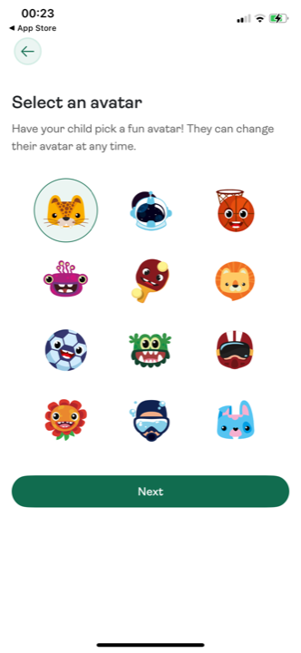
Pickatale · galerie ★★★★★
14-bonus-selection-avatar
Solide « Select an avatar / Have your child pick a fun avatar! They can change it at any time. » 12 mascottes animales rondes, un tap. Passage de relais à l'enfant explicite + réversibilité rassurante. Le modèle propre.
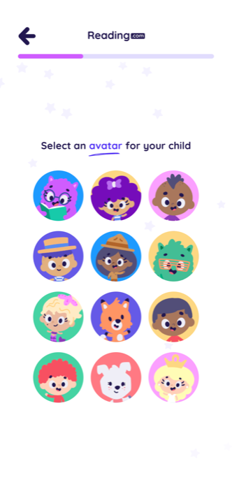
Reading.com · galerie ★★★★☆
12-select-avatar-child
Solide « Select an avatar for your child » : 12 visages d'enfants illustrés (peaux et coiffures variées) plutôt que des animaux. Inclusif, identification directe. Choix unique en un tap, fond blanc étoilé léger.
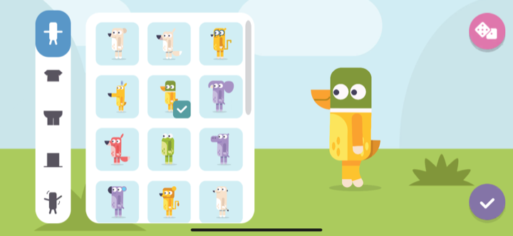
Hooked on Phonics · builder ★★★★☆
15-avatar-perso-corps
Solide Builder plein écran (paysage) : barre d'onglets corps / vêtements / accessoires, aperçu live à droite. Très engageant, vrai moment de jeu. Lourd à produire et long pour l'enfant.
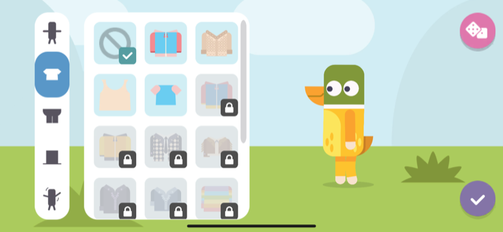
Hooked on Phonics · vêtements ★★★★☆
16-avatar-perso-vetements
Solide Onglet vêtements : plusieurs items verrouillés (cadenas) derrière le premium. Le builder devient un levier de conversion (débloquer plus d'items en s'abonnant). Attention au goût amer du « verrouillé » sur l'enfant.
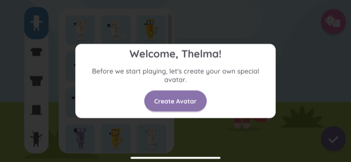
Hooked on Phonics · intro ★★★★☆
14-avatar-intro-welcome
Solide Modal « Welcome, Thelma! Before we start playing, let's create your own special avatar. » + bouton « Create Avatar ». Voix enfant assumée sur l'avatar : c'est le moment où le tutoiement est naturel.
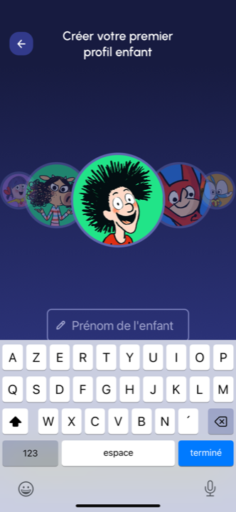
Bayam · carrousel héros ★★★★☆
04-profil-enfant-prenom
Solide Avatar d'abord : carrousel de personnages BD en haut, prénom dessous. Concurrent FR direct. Le perso est mis en avant comme accroche identitaire avant même la saisie.
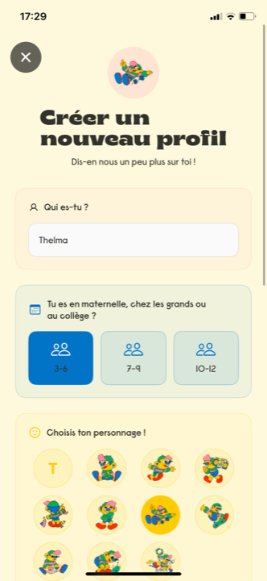
Kidsono (actuel) · galerie ourson ★★★☆☆
09-creer-profil-thelma
Solide Galerie de la mascotte ourson en poses variées + une initiale colorée (« T ») par défaut. La galerie est bonne, mais elle est coincée en bas d'un écran formulaire : le ludique passe après prénom et niveau scolaire, il n'a pas son moment.
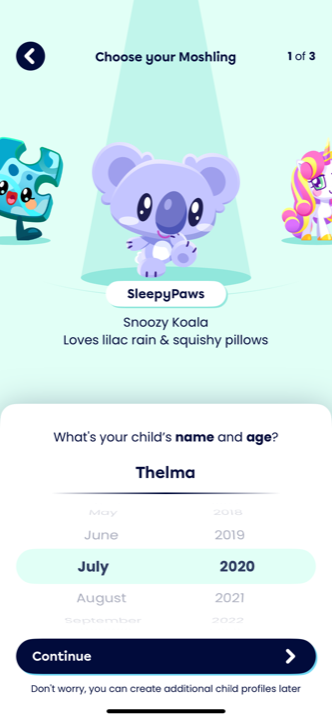
Moshi · perso à personnalité ★★★☆☆
03-choose-moshling-name-age-thelma
Observé « Choose your Moshling » : carrousel de créatures avec une personnalité nommée (« SleepyPaws, Snoozy Koala, loves lilac rain »). Donne une âme à l'avatar. Mais ici mêlé au prénom+âge dans le même écran (sheet en bas), c'est chargé.
Registre / voix · parent dominant, enfant minoritaire
Qui parle sur l'écran de profil
Le panel solide parle au parent sur prénom/âge. Le tutoiement enfant est minoritaire et porté par des perdants. La décision Kidsono (voix enfant) est contrarian, à doser.
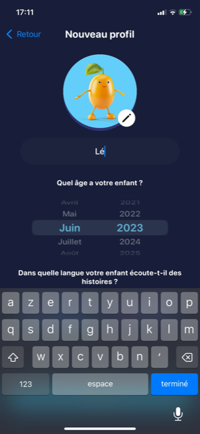
Alma Studio · voix parent ★★★★☆
03-profil-prenom-en-cours-saisie
Solide « Prénom de votre enfant », « Quel âge a votre enfant ? », « Dans quelle langue votre enfant écoute-t-il ? » Vouvoiement parent de bout en bout. Concurrent FR audio direct : c'est la norme du segment.
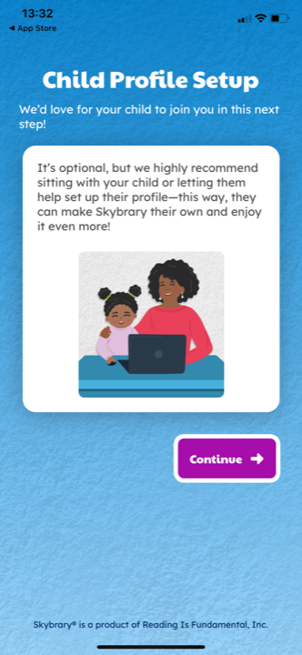
Skybrary · parent + enfant ★★★★☆
10-child-profile-setup-intro
Solide « Child Profile Setup / We'd love for your child to join you in this next step! It's optional, but we recommend sitting with your child... they can make Skybrary their own. » Parle au parent, invite l'enfant : le bon entre-deux.
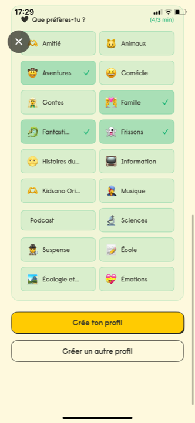
Kidsono (actuel) · voix enfant ★★★☆☆
10-preferences-categories
Solide « Que préfères-tu ? » : 16 catégories multi-select (Amitié, Aventures, Contes, Frissons…) avec émojis, cases cochées en vert, CTA « Crée ton profil ». Tutoiement enfant. Sur les goûts, le tutoiement est cohérent (c'est l'enfant qui aime).
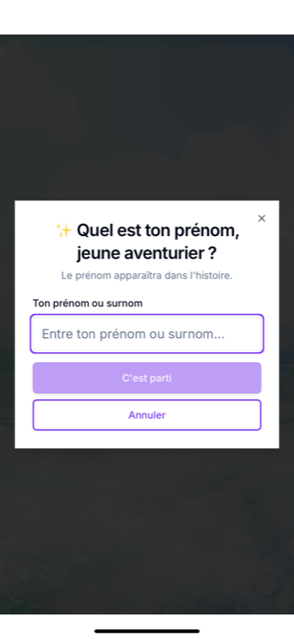
Capitaine Aventure (perdant F1b) · repoussoir ★★☆☆☆
12-bonus-modal-prenom
Contre-exemple. Modal « Quel est ton prénom, jeune aventurier ? / Le prénom apparaîtra dans l'histoire. » Tutoiement enfant sur le prénom. Famille des perdants, cité uniquement comme repoussoir : montre que demander le prénom à l'enfant en tutoiement existe, mais chez les apps les plus faibles.
Multi-profil · 1 suffit, le reste plus tard
Multi-profil dès l'onboarding ou différé
Un profil suffit pour démarrer, on signale qu'on pourra en ajouter. Le sélecteur « Qui regarde ? » est un écran de retour, pas un passage obligé initial.
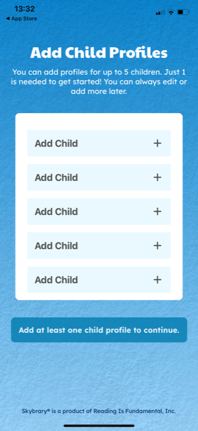
Skybrary · 1 suffit ★★★★☆
11-add-child-profiles
Solide « Add Child Profiles / for up to 5 children. Just 1 is needed to get started! You can always edit or add more later. » Le multi-profil est offert mais explicitement non bloquant. Modèle clair.
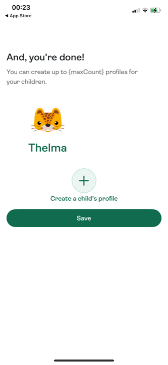
Pickatale · récap + ajout ★★★★☆
15-bonus-profil-cree
Solide « And, you're done! » : avatar + prénom créés, gros bouton « + Create a child's profile » optionnel, puis « Save ». Le multi-profil est une option à l'écran de clôture, pas une étape forcée.
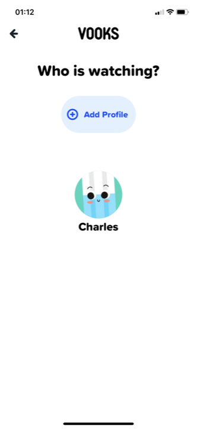
Vooks · sélecteur retour ★★★★☆
12-bonus-who-is-watching-profil
Solide « Who is watching ? » façon Netflix : avatars + « Add Profile ». C'est un écran de sélection à l'ouverture des sessions suivantes, pas de l'onboarding initial. Le multi-profil vit surtout ici.
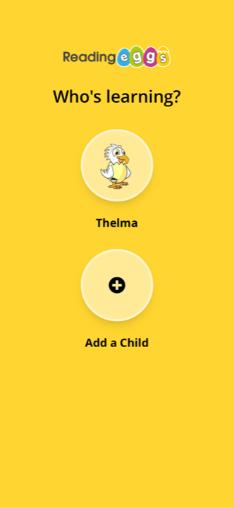
Reading Eggs · sélecteur retour ★★★★☆
22-whos-learning-profils
Solide « Who's learning ? » : profil créé + « Add a Child ». Même logique que Vooks. Le sélecteur multi-profil est un objet d'usage répété, distinct de la création initiale.
Place dans le flow · clôture festive avant le paywall
Le « profil créé ! » qui relance avant l'étape commerciale
Après le creux fonctionnel du profil, un écran de célébration referme la séquence sur une émotion positive, juste avant de demander de payer.
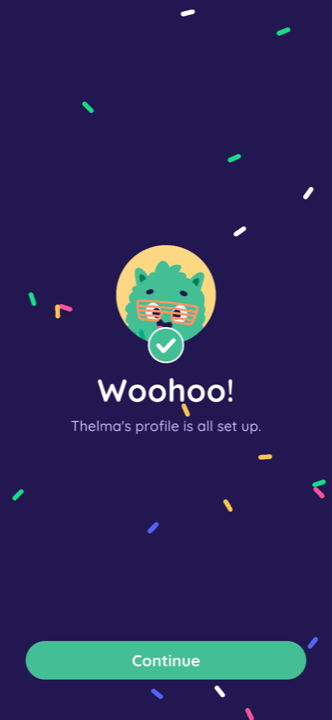
Reading.com · célébration ★★★★★
27-woohoo-profile-set-up
Solide « Woohoo! Thelma's profile is all set up. » Avatar + check vert + confettis sur fond navy, CTA « Continue ». Pic émotionnel de clôture : on referme positif avant le paywall.
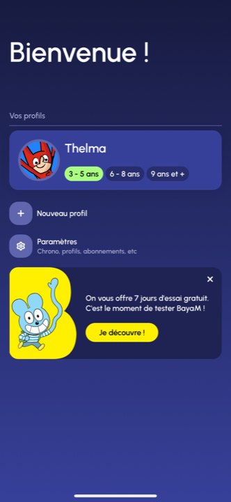
Bayam · bienvenue + offre ★★★★☆
10-bienvenue-profil
Solide « Bienvenue ! / Vos profils » : profil Thelma avec badges d'âge, + Nouveau profil, et encart « 7 jours d'essai gratuit, c'est le moment de tester ». La clôture profil enchaîne directement sur l'amorce commerciale.
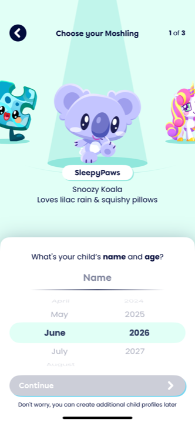
Moshi · profil ludique ★★★☆☆
02-choose-moshling-name-age-empty
Observé Profil traité comme un moment de jeu (Moshling animé sous projecteur), prénom+âge en sheet bas, « 1 of 3 ». Remonte l'intensité au lieu de la laisser plate. Mais condensé chargé.
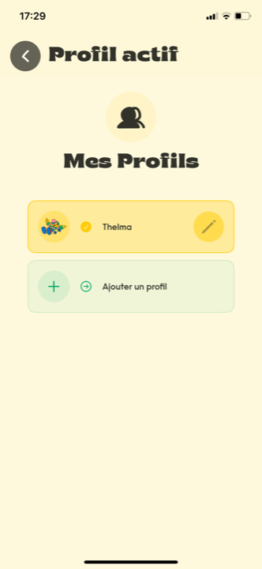
Kidsono (actuel) · récap profils ★★★☆☆
11-mes-profils-thelma
Solide « Mes Profils » : Thelma actif (avatar + crayon d'édition) + « Ajouter un profil ». Récap fonctionnel correct, mais neutre, sans moment festif de clôture. Une célébration type Reading.com manque avant le paywall.
Le rythme de la séquence profil
Où se place le profil dans l'onboarding, et comment l'intensité varie écran par écran. C'est le creux fonctionnel de la courbe, avec un seul vrai pic (l'avatar) et une clôture festive.
La courbe sur la zone profil : compte -> A neutre -> B pic -> C neutre -> clôture festive -> paywall
Écran A · prénom + âge
Creux fonctionnel
Champs de paramétrage adressés au parent. Fond sobre, formulaire. On fait travailler l'adulte, sans surcharge.
›
Écran B · avatar
Le pic ludique
Galerie colorée, aperçu animé, passage de relais à l'enfant. Le seul écran de la zone où l'intensité remonte.
›
Écran C · préférences
Redescente structurée
16 catégories multi-select. Goûts de l'enfant, voix enfant cohérente. Coloré mais c'est une grille de choix, pas un pic.
›
Clôture
Célébration -> paywall
« Profil créé ! » festif (confettis, avatar fier). Referme positif, sert de rampe vers l'étape commerciale.
Ce qui CHANGE dans la zone : l'intensité (neutre sur A et C, pic sur B), qui parle (parent sur A, enfant sur B et C). Ce qui RESTE : la couleur d'accent et la mascotte de marque comme fil rouge, le sentiment d'app unique. Estim. Le profil est globalement un creux assumé ; l'erreur serait de le rendre plat partout (aucun pic) ou chargé partout (tout sur un écran condensé sans respiration).
Implications pour les 3 écrans Kidsono
Écran A · prénom + tranche d'âge
- Découpage : l'existant condense prénom + niveau scolaire + avatar sur un seul écran ; Observé les apps solides découpées (Aumio, Reading.com) sont plus lisibles. A minima, sortir l'avatar de cet écran (c'est l'Écran B). Prénom + âge peuvent rester ensemble (court), mais l'avatar coincé en bas perd son moment.
- Libellé d'âge : Solide remplacer le wording niveau scolaire ambigu (« maternelle / chez les grands / collège ») par de l'âge chiffré (le standard : ABCmouse, Reading.com). Garder 3 bandes si le contenu n'en demande pas plus, mais les nommer en âges (« 3-6 / 7-9 / 10-12 ans »), pas en niveaux scolaires. Estim. L'âge chiffré évite l'ambiguïté et vieillit mieux à l'international.
- Voix : Observé le panel parle au parent sur prénom/âge. Kidsono a tranché voix enfant. Tenable sur le prénom (« Comment veux-tu qu'on t'appelle ? »), mais le champ âge en tutoiement (« Tu es en maternelle… ») est bancal car c'est le parent qui répond. Estim. Soit assumer le parent-et-enfant côte à côte, soit garder l'âge factuel et neutre.
- Multi-profil + rassurance : Observé ajouter une mention « tu pourras en créer d'autres plus tard » (Aumio, Reading.com, Skybrary le font tous). L'existant a déjà « Créer un autre profil », mais sans rassurer que 1 suffit.
Écran B · avatar (le moment ludique)
- Lui donner son propre écran : Solide c'est le seul pic de la zone profil. Pickatale et Reading.com le sortent sur un écran dédié « Select an avatar », avec passage de relais explicite à l'enfant. L'existant l'enterre en bas du formulaire : à isoler.
- Galerie de mascottes, pas builder : Observé la galerie en un tap est le standard rapide ; le builder couche-par-couche (Hooked on Phonics) est plus engageant mais lourd à produire et long. Pour un lancement à budget limité, la galerie de l'ourson en variantes est le bon niveau. Estim. L'initiale colorée (le « T ») est un repli, pas la proposition principale.
- Voix enfant ici = naturelle : Solide c'est l'écran où le tutoiement Kidsono colle (Hooked on Phonics « let's create your own special avatar », Pickatale « Have your child pick »). « Choisis ton personnage ! » est juste, à garder.
- Réversibilité : Observé mentionner « tu pourras le changer quand tu veux » (Pickatale) lève la peur de mal choisir et fluidifie. Ne pas verrouiller d'avatars derrière le premium au lancement (le goût amer du cadenas chez Hooked on Phonics).
Écran C · préférences de catégories (conservé tel quel)
- Voix enfant cohérente : Solide « Que préfères-tu ? » en tutoiement est légitime ici, ce sont les goûts de l'enfant. C'est l'écran où la décision voix enfant est la plus solide du trio.
- Place dans le rythme : Estim. 16 cases multi-select, c'est une grille de travail (redescente structurée), pas un pic. Le placer après l'avatar (le pic) est cohérent avec la courbe observée. L'ordre A -> B -> C tient.
- Skippable : Observé la décision Kidsono (profil skippable) est alignée avec le panel (« optional », « 1 suffit »). S'assurer que C soit skippable sans bloquer l'accès, pour ne pas perdre les pressés avant le paywall.
- Manque : la clôture festive : Solide aucun écran « profil créé ! » festif n'existe aujourd'hui (l'existant finit sur « Mes Profils » neutre). Estim. Ajouter une micro-célébration type Reading.com (confettis, avatar fier, « C'est prêt ! ») entre C et le paywall : referme sur du positif juste avant de demander de payer, ce qui sert la conversion.
L'avis
Force : les trois écrans Kidsono (A prénom+âge, B avatar, C préférences) sont au standard du segment dans leur principe : tous les concurrents solides demandent prénom + âge + avatar, et la galerie de mascottes est la voie majoritaire. La décision « avatar = moment ludique » est directement validée par Pickatale, Reading.com, Hooked on Phonics qui en font le pic d'engagement et le passage de relais à l'enfant. Solide
Risques : deux frictions repérées sur l'existant. (1) Le condensé tout-sur-un-écran écrase le moment avatar sous le formulaire prénom/âge : c'est le défaut principal à corriger en isolant l'avatar. (2) Le niveau scolaire comme libellé d'âge est ambigu et contrarian (aucune app solide ne l'utilise) ; l'âge chiffré est plus sûr. Observé Côté voix, le tutoiement enfant sur le champ âge est bancal et minoritaire (porté surtout par un perdant, Capitaine Aventure) ; il colle bien en revanche sur l'avatar et les goûts. Estim.
Position vs standard : au standard sur l'architecture (prénom + âge + avatar + préférences, multi-profil différé, profil skippable, clôture avant paywall). Les écarts Kidsono (voix enfant partout, niveau scolaire, condensé) sont contrarian sur les champs sérieux : tenables si parent et enfant sont côte à côte, mais l'âge chiffré et l'isolement de l'avatar sont les deux ajustements à bas coût et fort impact. Le seul vrai manque par rapport au standard est la célébration festive de fin de profil, absente aujourd'hui.
Audit construit à partir de 18 apps du corpus benchmark (concurrents FR audio/histoires, apps de lecture et d'apprentissage, plus l'existant Kidsono), captures lues une par une en pleine résolution. Niveaux : Solide vu sur captures · Observé pattern récurrent du panel · Estim. projection directionnelle. Apps de la famille des perdants (Kidjo, Capitaine Aventure) citées en contre-exemple uniquement. Décisions Kidsono (3 écrans A/B/C, skippable, multi-profil optionnel, voix enfant) figées : éclairées, non rediscutées. Mission conseil Kidsono, 2026-06-17.